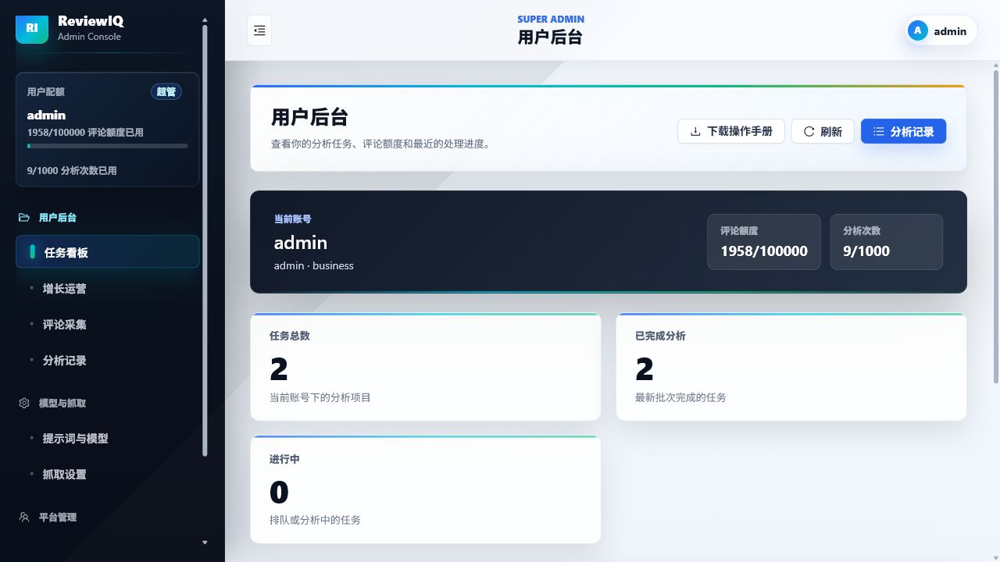
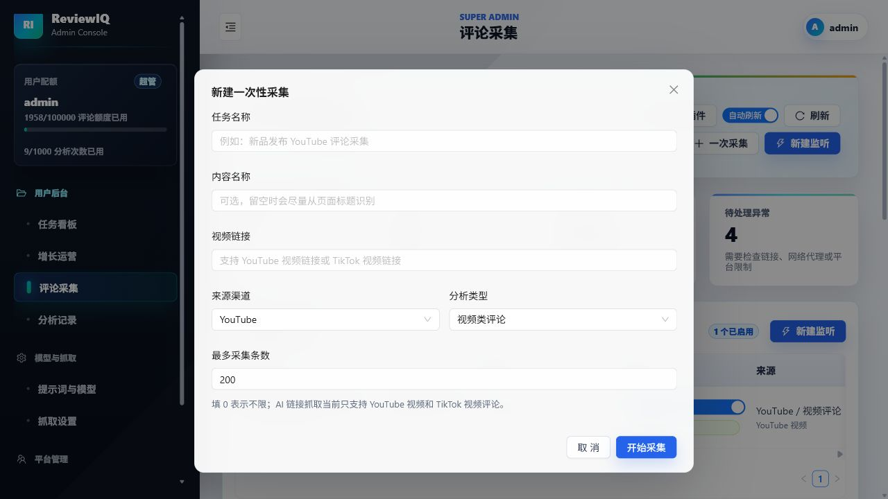
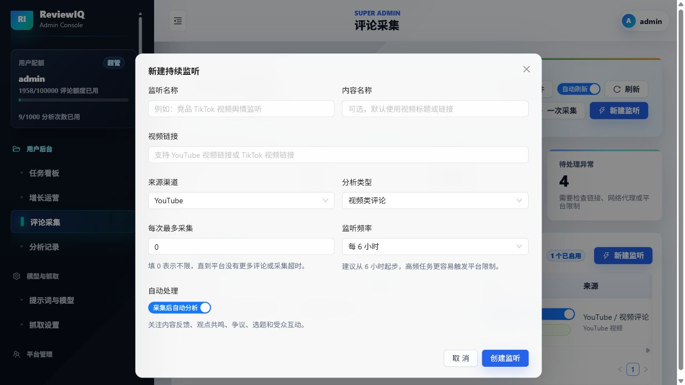
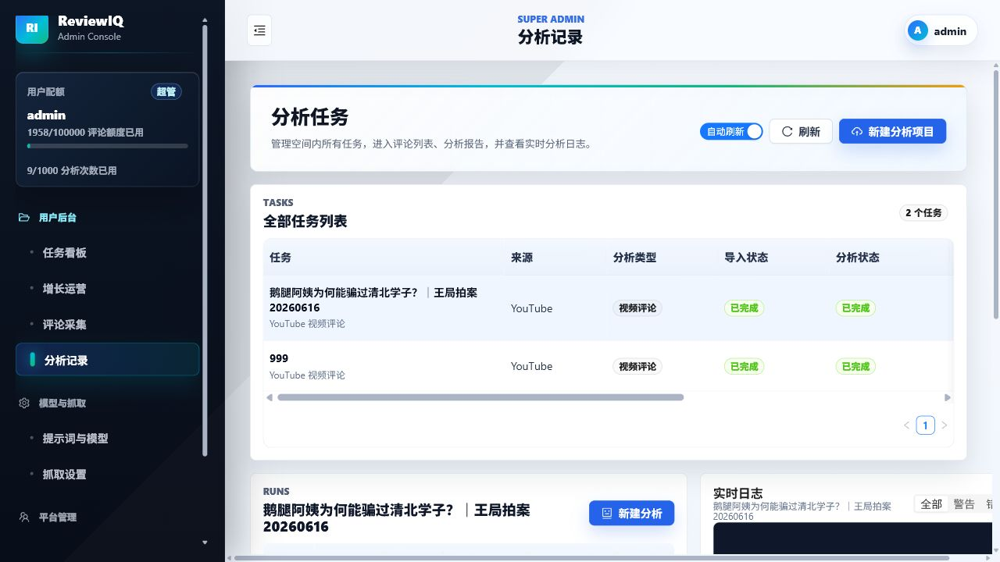
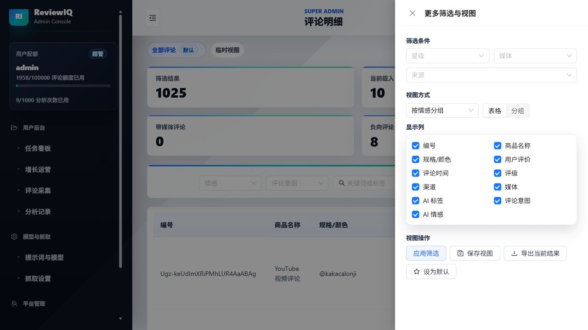
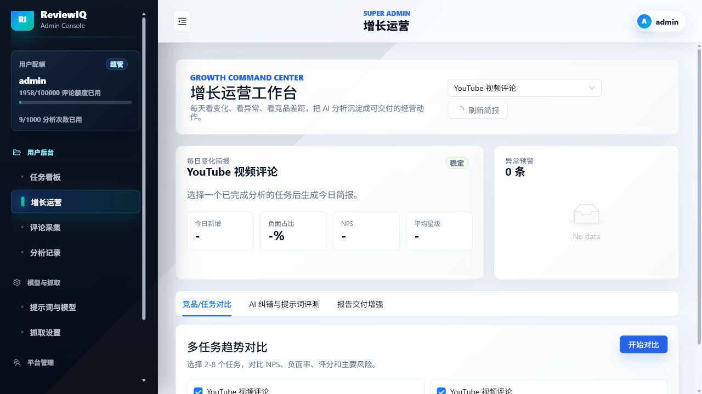
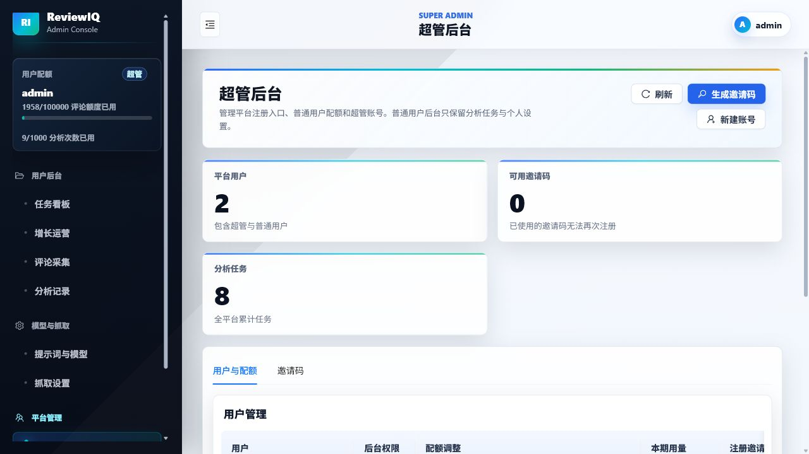
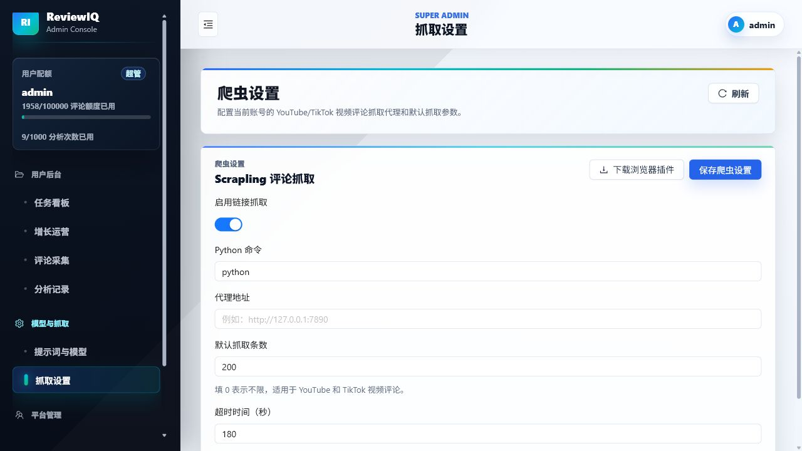
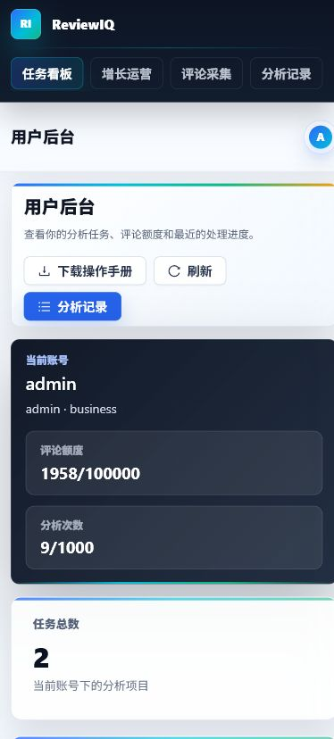

这是正常的。普通用户只负责采集、分析、查看报告和复核评论；模型、提示词、抓取参数由超管统一配置，避免不同用户配置不一致导致结果混乱。
Module 01
培训目标
理解系统定位
ReviewIQ 用来把 YouTube、TikTok、商品评论和社媒评论变成可分析的数据资产。
掌握标准流程
从链接采集到 AI 分析，再到评论复核和行动项沉淀，形成闭环。
知道排错方向
遇到未采集到评论、采集超时、分析偏差时，能先判断是链接、抓取还是提示词问题。
熟悉新版交互
掌握评论更多筛选、日志级别筛选、危险操作确认弹窗和移动端卡片列表。
Module 02
角色与权限
| 角色 | 主要使用功能 | 培训重点 |
|---|---|---|
| 普通用户 | 任务看板、评论采集、分析记录、评论明细、增长运营。 | 不要配置模型和抓取参数；重试、删除等低频操作通常在“更多”菜单中。 |
| 运营/分析人员 | 创建采集任务、查看分析报告、筛选评论、导出证据、跟进行动项。 | 重点讲“视频类评论”和“商品类评论”的分析类型选择。 |
| 超管 | 用户、工作区、邀请码、额度、AI 提示词与模型、抓取设置。 | 强调生产环境配置统一维护，避免普通用户误改。 |
Module 03
标准演示主流程
1登录
进入系统并说明账号权限。
2采集
用视频链接创建一次性采集。
3监听
创建持续监听并说明自动分析。
4分析
从采集记录进入分析记录。
5复盘
查看报告、评论明细、行动看板和增长运营。
Module 04
登录与任务看板
1
登录系统
输入账号密码，登录后进入任务看板。
2
讲解额度
说明评论额度、分析次数和当前账号套餐。
3
打开最近任务
点击最近任务中的“打开”，进入任务详情或分析记录。
讲师提示
如果是生产环境，不要在培训中展示真实敏感评论；优先使用演示账号或测试工作区。

Module 05
一次性评论采集
1
进入评论采集
确认顶部统计、持续监听任务和采集记录区域。
2
点击一次采集
填写任务名称、内容名称、视频链接、来源渠道和分析类型。
3
设置采集条数
演示 200 条或 0 不限制，并解释实际数量受平台加载和网络影响。
4
查看采集记录
讲解排队中、抓取中、已完成、失败；重试和删除一般在“更多”菜单，删除会弹出确认窗口。

Module 06
持续监听模式
1
点击新建监听
填写监听名称、链接、来源渠道和分析类型。
2
设置运行频率
例如每 6 小时运行一次，适合持续追踪新评论。
3
选择自动分析
开启后每次采集完成会自动进入 AI 分析流程。
4
切页返回验证
创建后切到任务看板，再回评论采集，监听任务应仍保留在列表中。
讲师提示
监听任务用于长期追踪同一链接；切换页面再返回后，监听任务仍应保留在列表中。删除监听只删除监听配置，不代表自动删除历史分析。

Module 07
分析记录与报告阅读
1
进入分析记录
查看任务名称、来源、类型、导入状态和分析状态。
2
讲解状态
未分析、排队中、分析中、已完成、失败分别意味着什么。
3
进入报告
按总体结论、NPS、情绪分布、用户声音、痛点和机会点阅读。
4
筛选日志
日志面板支持“全部 / 警告 / 错误”，失败任务优先查看错误日志。
关键提醒
YouTube 视频类评论必须选择“视频类评论”，避免被按商品评论的电商维度分析。

Module 08
评论明细复核
1
搜索和筛选
顶部保留情绪、意图、关键词；评分、媒体、来源渠道和展示列在“更多筛选”抽屉中。
2
抽查原文
报告结论有疑问时回到原始评论核对。
3
保存视图
把常用筛选条件保存为团队复盘视图。
4
导出证据
交付外部报告前导出关键评论作为支撑。
5
手机查看
移动端评论明细以卡片和分页展示，更适合快速核对。

Module 09
增长运营闭环
1
提炼机会点
从高频用户声音中找到内容选题、产品改进或舆情跟进方向。
2
进入行动看板
把问题拆成可执行事项，分配负责人、优先级和截止日期，并按状态跟进。
3
周期复盘
后续通过持续监听观察评论变化，验证动作是否有效。

Module 10
超管后台与抓取设置
超管后台
管理用户、邀请码、工作区和额度。新版工具栏按钮增加图标，演示时可按“刷新、生成邀请码、新建账号”的顺序讲。
抓取设置
启用评论采集、调整抓取数量、超时时间和重试策略。普通用户统一使用超管配置，不单独维护抓取参数。


讲师提示
视频类评论、商品类评论、社媒评论的提示词维度不同。分析偏差时，先检查任务类型和超管提示词配置。
Module 11
移动端演示
1
设备自适应
系统会根据 PC 或移动设备显示对应 UI。
2
适合场景
移动端适合查看状态、刷新任务、评论卡片复核和轻量跟进；大表格可横向滑动，右侧阴影提示还有内容。
3
链接录入
手机端新建任务时建议复制完整链接，减少输入错误。

Module 12
常见问题讲解
完整问答已保存为 training-faq.md，可作为讲师备用话术和培训后答疑材料。
普通用户不能直接修改。如果发现分析结果明显不符合业务，比如视频评论被当成商品评论分析，需要把任务名称、链接和截图反馈给管理员，由管理员统一调整提示词或模型配置。
评论额度表示当前周期内可以采集或处理的评论数量，分析次数表示可以发起 AI 分析的次数。额度不足时需要联系管理员调整。
通常只看到当前账号或当前工作区的数据。不同工作区之间的数据会隔离，具体范围由管理员配置。
一次性采集适合临时分析某条视频或链接；持续监听适合长期跟踪同一条视频的新评论，比如新品发布、投放视频、舆情内容。
培训或测试建议先填 100 到 300 条，确认链接和分析类型没问题后再加大。填 0 通常表示不限制，但实际数量仍受平台加载、网络、超时和抓取策略影响。
常见原因是平台分页加载、评论排序、网络超时、评论需要登录、单次采集上限过低，或者平台限制。可以提高采集条数、重试，或用持续监听分批采集。
先用浏览器打开链接，确认评论区公开可见、链接没有填错、来源渠道选择正确。如果页面能看到评论但系统仍采不到，再让管理员看抓取日志和服务器网络。
可能是前面还有任务、Worker 没启动、服务器繁忙或抓取服务异常。普通用户先不要重复创建太多任务，超过几分钟没变化就联系管理员。
网络波动、临时超时、平台加载失败适合重试；链接填错、任务建错、内容不再需要适合删除。删除前要看确认弹窗，确认任务名称和影响范围。
应该还在。监听任务是保存到系统里的，不应该因为切换页面消失。如果刷新后仍看不到，要联系管理员检查接口或数据库记录。
看创建时是否开启“自动分析”。开启后每次采集完成会自动进入分析流程；关闭时需要人工确认评论数量后再手动分析。
热点内容可以更频繁，比如每 1 到 6 小时；普通内容可以每天或每几天一次。频率太高会消耗额度，也可能增加平台访问压力。
通常删除的是监听配置，不一定删除历史采集记录和分析任务。实际以删除确认弹窗提示为准。
评论越多，分析越耗时。几千到几万条评论会受模型服务、并发额度、网络和服务器性能影响。建议先小样本验证，再分批处理大任务。
先采集一小批看方向是否正确，再扩大数量；大任务尽量分批，不要重复创建多个相同分析；持续监听适合长期增量采集。
通常是分析类型选错，或者提示词配置偏商品评论。视频类评论要选择“视频类评论”，重点看观点、态度、争议点、内容反馈和传播效果，不是物流、包装、售后这些电商维度。
可能是样本本身偏负向，也可能是分析规则过度把争议、调侃、中性讨论判成负向。先抽查原始评论，再检查分析类型和提示词配置。
不建议完全不复核。AI 报告适合快速发现趋势和重点，但对外汇报前要回到评论明细抽查原文，确认结论有评论证据支撑。
进入分析记录，看日志筛选。先切到“错误”，再看是否是模型返回异常、额度不足、评论数据异常或网络问题。
NPS 是整体推荐或态度倾向指标。商品评论偏购买推荐，视频评论更偏内容认可、观看体验和态度倾向，不能机械套用电商口径。
用户声音是评论里反复出现的观点、需求、痛点、关注点或争议点。它不是单纯关键词堆砌，而是帮助判断用户真正关心什么。
先到评论明细抽查原文，看是样本问题、采集不完整、分析类型错误，还是提示词需要调整。确认后把任务和截图反馈给管理员。
新版界面把低频筛选放进“更多筛选”抽屉。评论明细页点击“更多筛选”，可以看到评分、是否含媒体、来源渠道、分组和展示列等条件。
可以按当前筛选结果导出，用于报告证据、人工复核或二次分析。对外分享前要注意敏感内容和隐私信息。
系统会识别当前设备。电脑端适合复杂操作和大表格，手机端更适合查看状态、刷新任务、快速看报告和轻量复核。
大部分轻量操作可以完成，但复杂筛选、大量评论复核、批量导出和后台管理更建议在电脑端操作。
这是为了适配小屏幕。评论明细在手机上用卡片和分页展示，避免宽表格横向拖动太多。
通常不能恢复。删除采集记录、监听任务或分析任务前一定要看确认弹窗，确认不再需要后再删除。
可以，但建议先检查是否包含敏感评论、用户信息、内部任务名称或未确认结论。重要报告最好先做人工复核。
可以，但不建议无意义重复。重复分析会消耗额度，也可能让列表里出现多个相似任务。需要对比不同时间段时，建议用清晰的任务名称区分。
三句话：链接要公开可访问；分析类型一定要选对；报告结论要回到评论原文抽查验证。
Module 13
讲师演示清单
- 准备一个可公开演示的 YouTube 或 TikTok 视频链接。
- 确认演示账号可以登录，并且当前工作区有评论额度和分析次数额度。
- 确认评论采集已在抓取设置中启用。
- 确认 API、Web、Worker 都在运行，采集任务能进入队列。
- 先用少量评论跑一次采集和分析，避免现场等待过久。
- 演示时强调“视频类评论”和“商品类评论”的分析类型不能混用。
- 展示评论“更多筛选”、分析日志筛选、删除确认弹窗和持续监听的日常维护动作。